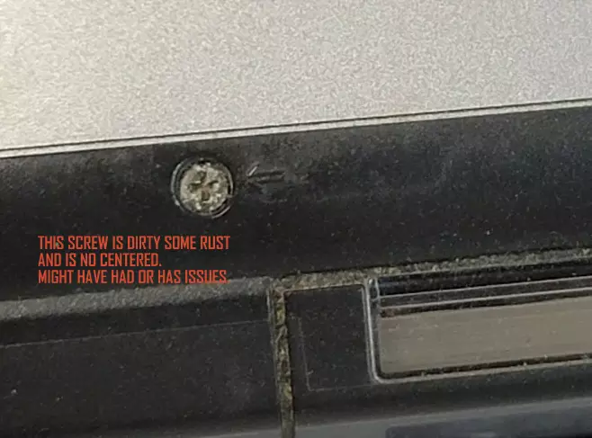
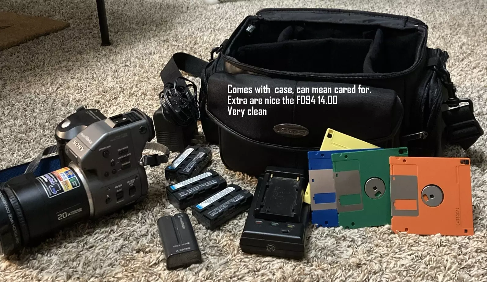

Mavica Buyers Guide
Buying a Mavica
can be challenging due to their ages. But if you look carefully you can
find good deals. Here are some photos and references.
These are just my opinions, based on what I do to find deals and items
that work

Worn buttons can mean over
use. Ring and nail scratches on grips as well.
|

No lens cover; items sold
without may indicate lens damage.
|

Watch listings on eBay for
repeated relisting; it may signal issues.
|

Screen damage can mean
exposure to heat or moisture; notice underlying issues.
|

Disassembled or rusty
screws can indicate prior repair attempts.
|
| 
Bag and extras usually
indicate care.
|

Check seller feedback and
sales history.
|

Sellers listing many
cameras may sell for parts.
|

Original stickers are
sought after by enthusiasts.
|

Look for impact,
cracks—hidden damage can exist.
|